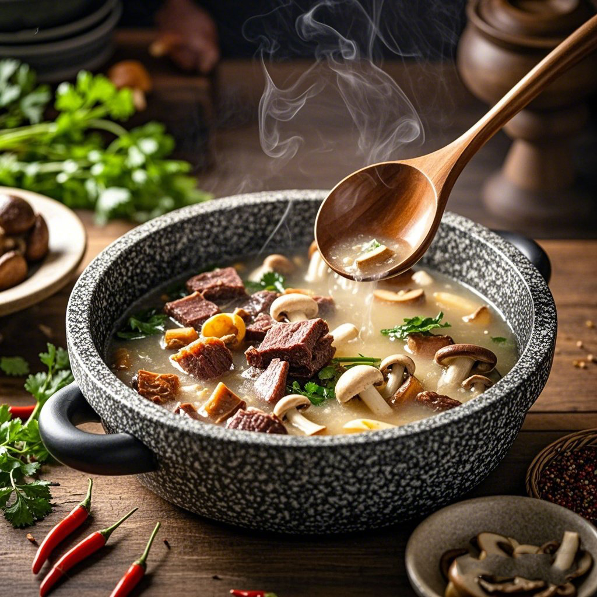

藏式传统美食
品味雪域风味，寻味舌尖甘孜！——牦牛肉火锅暖身，酥油茶香暖心，松茸炖鸡尝鲜，康定凉粉开胃……

牦牛肉菌汤锅
来自川西高原的甘孜牦牛肉菌汤锅，精选放养牦牛肉与野生菌菇，慢火熬制，汤鲜肉嫩，滋补暖身，是高原风味的极致呈现。
品味雪域风味，寻味舌尖甘孜！——牦牛肉火锅暖身，酥油茶香暖心，松茸炖鸡尝鲜，康定凉粉开胃……
来自川西高原的甘孜牦牛肉菌汤锅，精选放养牦牛肉与野生菌菇，慢火熬制，汤鲜肉嫩，滋补暖身，是高原风味的极致呈现。